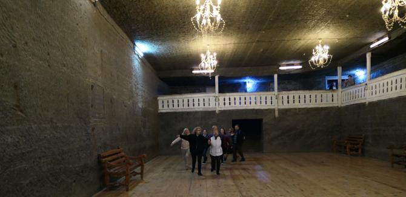
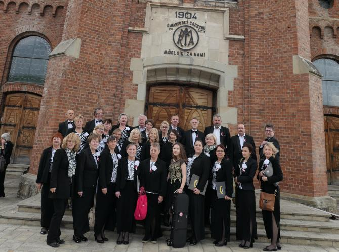

do aktualności
do aktualności2019-04-30 do 2019-05-05
Tym razem za cel podróży zespół pod dyr. Izabeli Szoty obrał Mołdawię i Rumunię.
Projekt był współfinansowany ze środków Województwa Małopolskiego oraz Powiatu Wielickiego.
Współorganizatorami wyjazdu byli: Gmina Wieliczka, Kopalnia Soli „Wieliczka”- Trasa Turystyczna Sp. z o.o. oraz Centrum Kultury i Turystyki w Wieliczce.
Wyruszamy w daleką drogę, ale zadowoleni, co widać. Przed nami 14 godzin jazdy!
Hahaha 14 godzin, to było bardzo optymistyczne założenie... jechaliśmy 19 godzin, ale jesteśmy.Teraz hotel, szybkie spanko, bo rano dalej w drogę.
Jedziemy do Mołdawii na koncert, ale najważniejsze, że dobry humor nas nie opuszcza.
Były oczywiście przerwy w czasie jazdy.
1 maja w obecności Ambasadora Nadzwyczajnego i Pełnomocnego Rzeczypospolitej Polskiej w Republice Mołdawii dra hab. Bartłomieja Zdaniuka, na zaproszenie Stowarzyszenia "Dom Polski" w Bielcach (Bălti / Mołdawia) Camerata zaprezentowała muzykę polską.
Obok pieśni patriotycznych i pieśni ludowych, na repertuar chóru złożyły się utwory Stanisława Moniuszki (200 rocznica urodzin kompozytora), Grażyny Bacewicz (110 rocznica urodzin i 50 rocznica śmierci kompozytorki), Fryderyka Chopina (170 rocznica śmierci kompozytora) i Jana Stefaniego (190 rocznica śmierci kompozytora i 225 rocznica wystawienia pierwszej polskiej opery narodowej).
Koncert, który rozpoczęła Bogurodzica, wypełniły polskie tańce narodowe: Kujawiak, Mazur z opery "Straszny Dwór" S. Moniuszki, Krakowiak i Polonez z wodewilu J. Stefaniego „Cud mniemany, czyli Krakowiacy i Górale”, uważanego za pierwszą polska operę narodową,
a także Oberek G. Bacewicz w wykonaniu Jadwigi Korab Chrzanowskiej, uczennicy Zespołu Szkół Muzycznych w Wieliczce, z klasy skrzypiec dra Marka Polańskiego. Zarówno solistce, jak i chórowi akompaniowała Agnieszka Korczyńska.
Ambasador RP w Republice Mołdawii wyraził wdzięczność „za wzruszający występ upamiętniający 15 rocznicę powrotu Polski do rodziny wolnych narodów oraz za pokrzepienie serc besarabskich Polaków”.
Podobnie Mołdawska Polonia z wielkim wzruszeniem dziękowała „za odrobinę polskości w kraju Hospodarstwa Mołdawskiego”.
Na zakończenie koncertu krótkie, ale serdeczne spotkanie z Polakami mieszkającymi w Mołdawii
i wpis do kroniki naszego chóru.
2 maja schodzimy radośni do autokaru, jedziemy na mszę.
Chyba jedziemy? ponieważ jakiś „radosny” kierowca zaparkował auto w bramie wyjazdowej a nas czas goni. I co? Z pomocą przychodzą strażacy … po prostu wrzucili auto pod sam mur
i przejechaliśmy ...
ale dzięki niesamowitej umiejętności naszego pana kierowcy, gdyż przejazd był „na żyletki” jak mawiają kierowcy :) DZIĘKUJEMY obu panom kierowcom !!!
Camerata oprawia uroczystą Mszą Św. w Kościele Polskim w Bielcach,
po której dzieci i młodzież z Domu Polskiego zaprezentowały niezwykle wzruszający, przepełniony polskim duchem narodowym program.
W ten wyjątkowy poranek wnętrze kościoła wypełniły na koniec dźwięki Mazurka Dąbrowskiego w wykonaniu Cameraty oraz Polonii i Polaków mieszkających w Mołdawii.
Już po mszy, więc idziemy zwiedzić miasto.
Jeszcze wizyta w Domu Polskim,
zdjęcie na pożegnanie
i odjeżdżamy.
A wieczorem obiadokolacja w Domu Polskim w Kaczyce - spotkanie z Polonią
3 maja Camerata odwiedziła Kopalnię Soli w Kaczyce (Cacica / Rumunia), kopalnię, którą zakładali wieliccy i bocheńscy górnicy.

Teraz idziemy zwiedzać monastyr.
Podczas uroczystej Mszy Św. w Kościele Polskim w Kaczyce – Bazylice Wniebowzięcia Najświętszej Marii Panny – Prezes Domu Polskiego w Kaczyce Pani Krystyna Cehaniuc podziękowała za obecność w tak ważnym dniu dla wszystkich Polaków, zaś Ksiądz Proboszcz podkreślił, że Wieliczka powinna czuć się w Kaczyce jak u siebie.

4 maja mamy dzień wolny od koncertów, więc idziemy zwiedzać.
Na zakończenie dzisiejszego dnia "Wesoły cmentarz".
W drodze powrotnej do Polski – 5 maja Camerata zaśpiewała w Katedrze Wniebowzięcia NMP w Satu Mare (Rumunia).
Wracamy do domu po pięknej podróży, jak zawsze ze śpiewem na ustach.
Jednak podróż po Mołdawii i Rumunii to nie tylko koncerty muzyki polskiej, to także wzruszające spotkania z Polonią i Polakami, podziwianie krajobrazów Bukowiny oraz czarownych monastyrów, to także poznawanie pięknej, choć niejednokrotnie trudnej historii naszego narodu, którego ślady można odnaleźć wszędzie. Nasuwa się więc refleksja, jak bardzo aktualne są słowa pieśni: „Gdzie bądź się spotkamy, spotkamy się przecie, zawsze Polakami, chociaż w innym świecie”.
do aktualności


 Prowadzenie strony oraz zdjęcia: Małgorzata Wysocka-Cebula
Prowadzenie strony oraz zdjęcia: Małgorzata Wysocka-Cebula